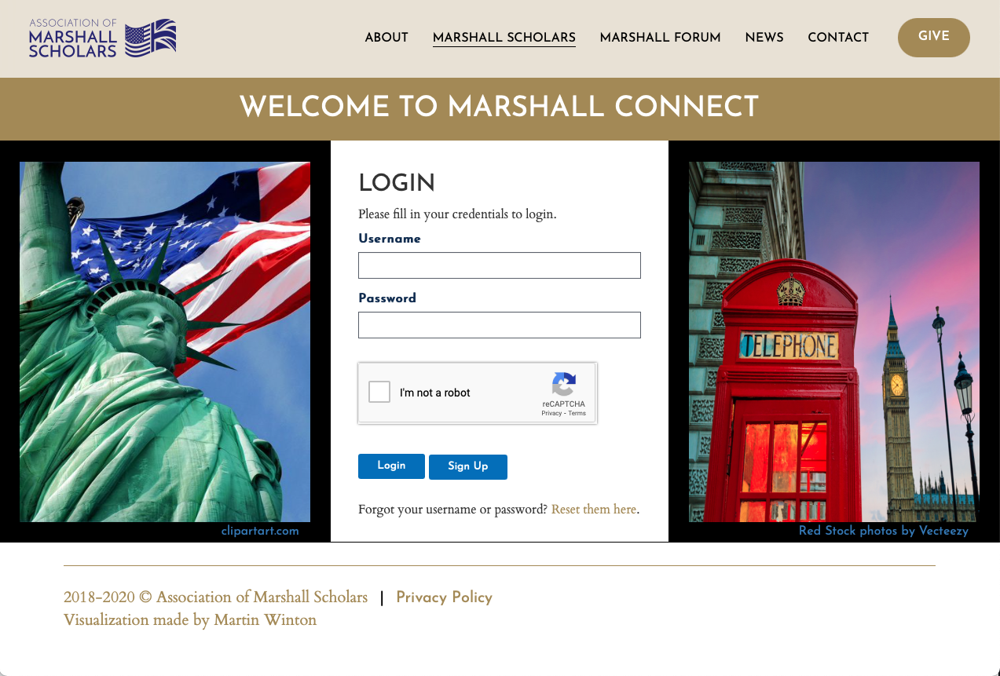

Login Page
Highlights the Association's purpose of bringing U.S. and U.K. culture together while providing the standard security measures.
Directory Page
Display of scholar information. Initially, 5 lines are displayed with primary information. Clicking on icons and text reveals additional information. Clean design as to not overwhelm.
Edit Profile Page
Allows users to edit information in their profile. Tabs hide additional data entry forms. The clean design keeps the user from being overwhelm.
Primary Profile Information Section
Allows users to edit what's considered primary information in their profile. Notice the expanded institution information box. The collapsible box hides information in plain sight. A similar approach is taken in for the degree information boxes. The goal was to display only the basic information. The user can then choose to display any other information.
Admin Control Panel Page
Simple interface to perform CRUD activities on profiles (names blacked out for privacy).